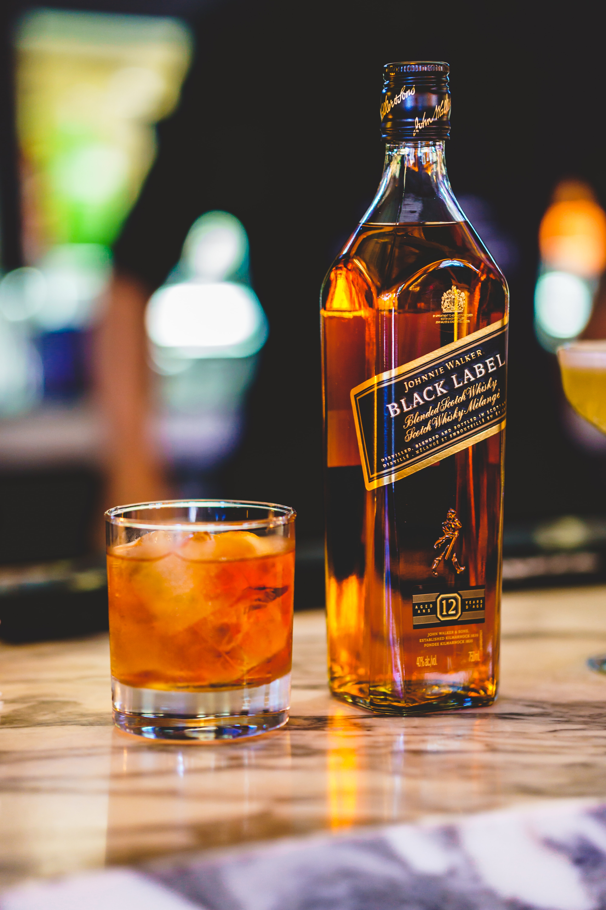

위스키는 보리, 밀, 호밀, 옥수수, 귀리 등의 곡류를 당화, 발효, 증류, 숙성시켜 만든 술이다. 위스키의 어원은 켈트어이며, 생명의 물이란 뜻이다.
위스키는 12세기 아일랜드에서 처음으로 제조되기 시작했으며, 15세기경 스코틀랜드로 전파되어 오늘날의 스카치 위스키를 만들었다.
초기 위스키는 투명하였으나 피트와 셰리 와인 통을 사용한 후부터 위스키 특유의 향과 호박색을 가진 부드러운 술이 되었다.
몰트 위스키 : 100% 맥아를 원료로 만든 위스키로서, 피트탄으로 건조한 맥아의 당액을 발효해서 증류한 피트향과 통의 향이 배인 독특한 맛의 위스키
제조 과정은 보리 - 침맥 - 건조(피트) - 분쇄 - 당화 - 발효 - 증류(단식) - 숙성(오크통) - 병입
그레인 위스키 : 곡물을 원료로 만든 위스키로서 연속식 증류기로 증류하는데, 풍미가 가볍기 때문에 Silent Spirit이라고도 함
제조 과정은 곡물 - 분쇄 - 당화 - 발효 - 증류(연속식) - 숙성(저장)
블렌디드 위스키 : 몰트와 그레인을 혼합하여 만든 위스키
제조 과정은 몰트 위스키 + 그레인 위스키 = 혼합 - 병입
아이리시 위스키
스카치 위스키
아메리칸 위스키
캐나디안 위스키
